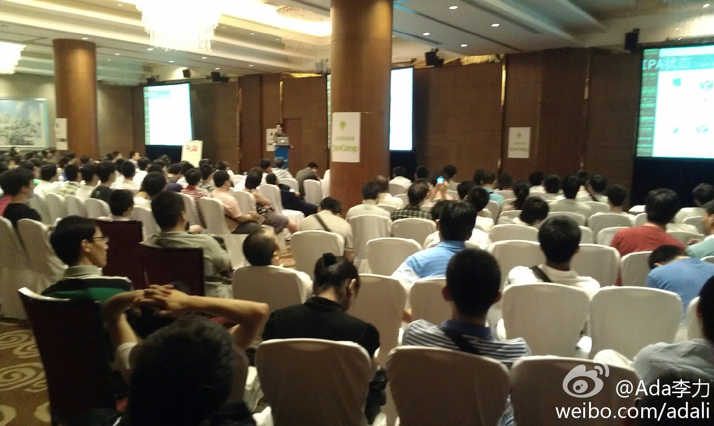

以往地域自然形成的一些社区规则，在网上社区依然通用，对企业来说，挖掘企业社区代言人，比请明星代言的效果好。我还是相信在大平台上打造自己的企业社区是个趋势。---:抱歉，作者已设置仅展示半年内微博，此微博已不可见。
盛大创新院与社区合作举办的技术活动越来越多了。@LukeFan:QClub(北京)：NoSQL数据库在云计算环境下的实践（7月28日 免费报名！） 网页链接 演讲主题：《争议中成长的Cassandra》、《云端的数据库—MongoDB和MySQL的云服务》
#DevCamp#活动下午听众还是坐得满满的，有人在会场后面站着听。上网的人应该非常多，现场无论是使用酒店的WiFi, 还是中国移动GPRS，一律联不上网。移动开发方面的技术活动太占用网络带宽了。 
我上小学时，有同学出走一个月的，所在学校发生过好几起。现在的孩子出走就成新闻了。//@可爱的北京飞妈:@蝈郭郭 小孩不好带啊！@钱江晚报:【伤不起的小孩】揣着24元钱，11岁男孩小峰独自一人在高速路上走了11天。渴了，在公路服务站用矿泉水瓶装水喝;饿了啃点面包;困了，睡在高速公路边上的紧急停车带上。走到150公里，才被高速路政发现，通知他家人将其接回。小峰之所以离家出走，是因为老爸买了5本暑假作业让他做：网页链接
Facebook股价一跌，对社交媒体的唱衰声就一片。@DCCI互联网数据中心:【全球社交媒体营收瓶颈渐显】最新数据预测2012年全球社交媒体营收将达到169亿美元，其中广告营收占比将超过50%，而相比之下社交网络用户已突破10亿未来只会适度增长。游戏成为社交媒体营收主要动力2012将贡献62亿美元,。预计2016年前社交媒体将无法依靠新的服务带来新营收。via Gartner